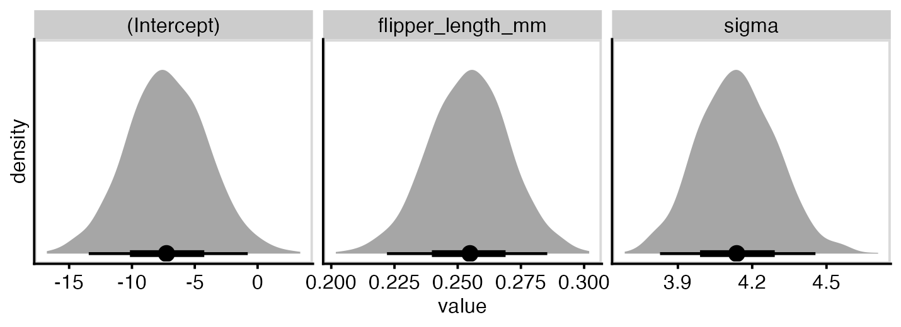
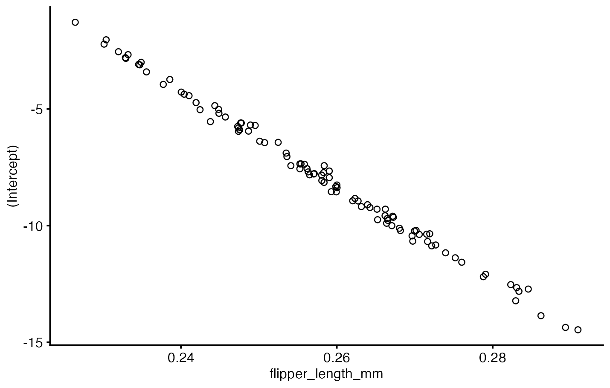
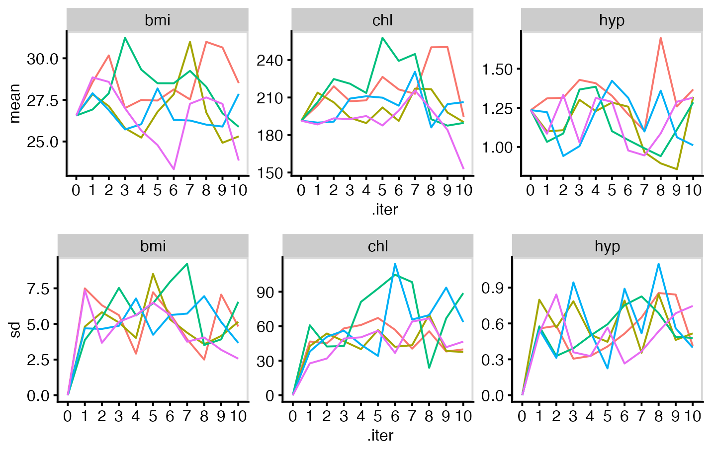
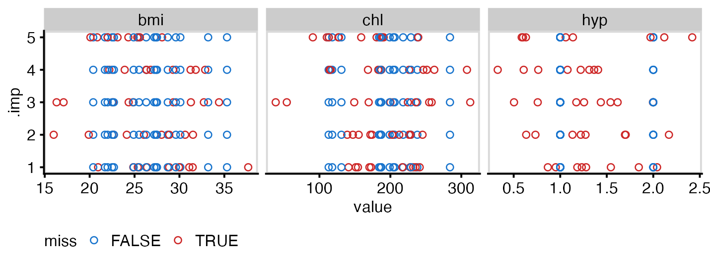

_(9998321085).jpg){kind=link}
# estimate_bayes_lm_jeffreys(Y, X): obtain Bayesian linear regression parameter
# estimates from design matrix X and observations Y, using a Jeffreys prior.
# Should produce the same output as lm().
estimate_bayes_lm_jeffreys <- function(Y, X) {
stopifnot(is.matrix(X) & is.numeric(X) & !any(is.na(X)))
stopifnot(is.vector(Y) & is.numeric(Y) & !any(is.na(Y)))
stopifnot(nrow(X) == length(Y))
# crossprod(X) computes X^T X
# solve(X, Y) computes X^-1 Y
# Some fiddling is needed since we want our vector outputs to be R vectors,
# not R matrices
xtx <- crossprod(X)
beta <- as.vector(solve(xtx, t(X) %*% Y))
df <- nrow(X) - ncol(X)
s2 <- as.vector(crossprod(Y - X %*% beta) / df)
V <- s2 * solve(xtx)
# Attach variable names to regression coefficients
names(beta) <- colnames(X)
res <- list(X = X, Y = Y, beta = beta, V = V, df = df, s2 = s2)
class(res) <- "bayeslm"
res
}Introduction
Coding up an algorithm is a great way to make sure you really understand how the details work. In this post I’m going to implement multiple imputation and the MICE algorithm (Van Buuren, 2007), albeit in much simplified form: only considering missing data in numeric variables, only using Normal-distribution Bayesian linear regression to generate the imputed data, no concerns about robustness of the code for production purposes.
If the standard version of this method is called MICE, think of this as a smaller, cuter, maybe slightly endangered variation. Perhaps a fat-tailed dunnart.

Bayesian linear regression
We will be imputing each individual variable with missing data using Bayesian linear regression with uninformative Jeffreys priors. For this choice of prior, the posterior distribution of the parameters has an easily computable analytic distribution. This approach is explained in detail in Gelman et al. (2014), chapter 14.
The regression equation is given by \(E(Y|X) = X^T \beta\), where \(Y\) is a column vector of observations, \(X\) is the design matrix, and \(\beta\) is a column vector of regression coefficients. We assume independent normally distributed errors with equal standard deviation: \(Y|X \sim \mathrm{MVN}(X^T \beta, \sigma^2 I)\). In other words, the usual classical linear regression.
Obtaining parameter estimates from Jeffreys priors
The simplest choice of prior (in terms of easily obtaining a posterior distribution) is the Jeffreys prior, which is an improper uninformative prior: uniform over \((\beta, \log \sigma)\). In this case, the posterior distribution of \(\beta\) is multivariate normal: \(\beta \sim \mathrm{MVN}(\hat\beta, V)\). Here \(\hat\beta = (X^T X)^{-1} X^T Y\) is the frequentist maximum likelihood estimate (ordinary least squares regression) and \(V = \sigma^2 (X^T X)^{-1}\) is the usual linear regression variance-covariance matrix.
The posterior distribution of \(\sigma^2\) is \(\mathrm{Inverse-}\chi^2(n-k, s^2)\) where \(s^2\) is the standard frequentist estimate of the residual variance (Gelman et al., 2014, p. 355). This scaled inverse \(\chi^2\) distribution was a new one to me1. We say a random variable \(U \sim \mathrm{Inverse-}\chi^2(\nu, \mu)\) if \(V \sim \chi^2(\nu)\) and \(U = \nu\mu/V\) (Gelman et al., 2014, p. 581).
We could just use the built-in R lm function, but it’s been a long time since I last implemented linear regression from scratch, so thought I’d give it a go here. If you’re not interested in seeing this, skip to the section about drawing from the posterior distribution.
This function expects a vector of observations and a design matrix containing the predictors, but that’s not very convenient in practice. To make this easier to use, let’s write a function that implements a formula interface closer to the standard R lm function. This takes advantage of two base R functions: model.frame takes a model formula and prepares a data frame with the variables mentioned in it, with the outcome variable first, omitting missing values, and providing the option to only include a subset of rows; and model.matrix which creates a design matrix from a formula and a data frame, adding an intercept and creating dummy variables for categorical variables if needed.
bayes_lm <- function(
formula, data = NULL, subset = NULL,
na.action = getOption("na.action"),
estimator = estimate_bayes_lm_jeffreys
) {
if (is.character(na.action)) {
na.action <- get(na.action)
}
mf_args <- list(formula = formula, data = data,
subset = subset, na.action = na.action)
model_frame <- do.call(stats::model.frame, mf_args)
model_matrix <- model.matrix(formula, model_frame)
estimator(model_frame[[1]], model_matrix)
}To make the objects that we’ve created behave a bit more like standard R lm objects, we can implement some S3 methods for our new type of object:
coef.bayeslm <- function(m) m$beta
vcov.bayeslm <- function(m) m$V
sigma.bayeslm <- function(m) sqrt(m$s2)
df.residual.bayeslm <- function(m) m$df
resid.bayeslm <- function(m) (m$Y - m$X %*% t(m$beta))
print.bayeslm <- function(m, digits = 3) {
cat("Coefficients:\n")
print(format(m$beta, digits = digits), quote = FALSE)
}
summary.bayeslm <- function(m)
data.frame(
term = names(m$beta),
estimate = m$beta,
std.error = sqrt(diag(m$V)),
conf.low = m$beta - qt(0.975, m$df) * sqrt(diag(m$V)),
conf.high = m$beta + qt(0.975, m$df) * sqrt(diag(m$V)),
row.names = seq_along(m$beta)
)Let’s make sure this works as expected, using the penguins data from the palmerpenguins package:
library(palmerpenguins)
data(penguins)Fit two models, one using lm and one using bayes_lm, to predict bill length from flipper length:
penguins_lm <- lm(
bill_length_mm ~ flipper_length_mm ,
data = penguins
)
penguins_blm <- bayes_lm(
bill_length_mm ~ flipper_length_mm,
data = penguins
)Check that the regression coefficients are the same for both models:
summary(penguins_lm)
Call:
lm(formula = bill_length_mm ~ flipper_length_mm, data = penguins)
Residuals:
Min 1Q Median 3Q Max
-8.5792 -2.6715 -0.5721 2.0148 19.1518
Coefficients:
Estimate Std. Error t value Pr(>|t|)
(Intercept) -7.26487 3.20016 -2.27 0.0238 *
flipper_length_mm 0.25477 0.01589 16.03 <2e-16 ***
---
Signif. codes: 0 '***' 0.001 '**' 0.01 '*' 0.05 '.' 0.1 ' ' 1
Residual standard error: 4.126 on 340 degrees of freedom
(2 observations deleted due to missingness)
Multiple R-squared: 0.4306, Adjusted R-squared: 0.4289
F-statistic: 257.1 on 1 and 340 DF, p-value: < 2.2e-16summary(penguins_blm) term estimate std.error conf.low conf.high
1 (Intercept) -7.2648678 3.20015684 -13.5594666 -0.9702689
2 flipper_length_mm 0.2547682 0.01588914 0.2235148 0.2860216Drawing from the posterior predictive distribution
To sample from the posterior predictive distribution, we use a two-stage process. First, draw from the posterior distribution of the parameters (regression coefficients and residual variance). As previously discussed, the regression coefficients have a multivariate normal distribution and the residual variance has an \(\mathrm{Inverse-}\chi^2\) distribution. Secondly, draw posterior predictions conditional on those parameter estimates, using \(Y|X,\beta,\sigma^2 \sim \mathrm{N}(X^T \beta, \sigma^2)\).
The function below does the first stage, drawing from the posterior distribution of the model parameters. It doesn’t require the model to be fit using the code from above, this should work for any lm model.
draw_bayes_lm_params <- function(m, ndraw = 1) {
stopifnot(inherits(m, c("lm", "bayeslm")))
stopifnot(is.numeric(ndraw) & length(ndraw) == 1 & ndraw >= 1)
# Draw from the posterior distribution of parameters
draw_beta <- mvtnorm::rmvnorm(ndraw, coef(m), vcov(m))
df <- df.residual(m)
draw_sigma <- sigma(m) * sqrt(df / rchisq(ndraw, df))
list(beta = draw_beta, sigma = draw_sigma)
}To get some idea if this is working, let’s plot the posterior distribution of our parmaeters. They look like what we might expect - normally distributed about the parameter estimates shown above. In fact the distribution of sigma looks far closer to normal than I expected, given it’s actually a scaled inverse Chi squared distribution!
Code
set.seed(12345)
penguins_blm %>%
draw_bayes_lm_params(1000) %>%
map(as_tibble) %>%
bind_cols() %>%
rename(sigma = value) %>%
pivot_longer(everything(), names_to = "var", values_to = "value") %>%
ggplot(aes(x = value)) +
stat_slabinterval(normalize = "panels") +
scale_y_continuous(breaks = NULL) +
facet_wrap(vars(var), scales = "free") +
labs(x = "value", y = "density") +
panel_border()
The posterior regression coefficients for flipper length and intercept are negatively correlated, as we might expect:
Code
set.seed(54321)
penguins_blm %>%
draw_bayes_lm_params(100) %>%
pluck("beta") %>%
as_tibble() %>%
ggplot(aes(x = flipper_length_mm, y = `(Intercept)`)) +
geom_point(pch = 1)
Now we’re more confident that seemed to work, we can write another function to estimate the posterior predictive distribution of a bunch of new observations, given their X values. This works by drawing a set of \(\beta\) parameters, calculating Y values from those, and adding some normally-distributed random noise based on \(\sigma^2\). This results in the model-predicted distribution of new observations.
draw_bayes_lm_ppred <- function(m, X = m$X, ndraw = 1) {
stopifnot(inherits(m, c("lm", "bayeslm")))
stopifnot(is.matrix(X) & is.numeric(X) & !any(is.na(X)))
stopifnot(ncol(X) == length(coef(m)))
params <- draw_bayes_lm_params(m, ndraw = ndraw)
X %*% t(params$beta) + matrix(
rnorm(nrow(X) * ndraw, 0, rep(params$sigma, each = nrow(X))),
nrow = nrow(X)
)
}To demonstrate this in action, the plot below shows a subset of the penguins data, the regression line (grey), the observed data (solid blue circles), and 10 draws from the posterior predictive distribution (hollow red circles):
Code
set.seed(42)
penguins_subset <- penguins %>%
select(bill_length_mm, flipper_length_mm) %>%
drop_na() %>%
sample_n(30)
penguins_subset_ppred <- draw_bayes_lm_ppred(
penguins_blm,
model.matrix(bill_length_mm ~ flipper_length_mm, data = penguins_subset),
ndraw = 10
)
penguins_subset_ppred_dat <- penguins_subset_ppred %>%
as_tibble(.name_repair = "unique") %>%
bind_cols(flipper_length_mm = penguins_subset$flipper_length_mm) %>%
pivot_longer(-flipper_length_mm,
names_to = "rep",
values_to = "bill_length_mm")
ggplot(penguins_subset, aes(x = flipper_length_mm, y = bill_length_mm)) +
geom_abline(intercept = coef(penguins_blm)[1],
slope = coef(penguins_blm)[2],
colour = "black",
linewidth = 1.5,
alpha = 0.5) +
geom_point(colour = "dodgerblue4", size = 4, alpha = 0.5, stroke = NA) +
geom_point(colour = "firebrick4", size = 1, pch = 1,
data = penguins_subset_ppred_dat, alpha = 0.5)If we only had missing values in one variable, we would be at the point of producing imputed datasets now. But real-life missing data problems tend to have missing data in multiple variables, so we will need to use an iterative method to generate imputations for all variables.
Creating imputations by chained equations
The first iteration of imputed data
dunnart_initial_imputation_for_var <- function(x) {
stopifnot(is.vector(x) & is.numeric(x))
stopifnot(!all(is.na(x)))
stopifnot(any(is.na(x)))
replace_na(x, mean(x, na.rm = TRUE))
}dunnart_initial_imputation_for_df <- function(dat, formula_list) {
stopifnot(is.data.frame(dat))
stopifnot(is.list(formula_list))
vars <- map_chr(formula_list, \(f) all.vars(f)[1])
mutate(dat, across(all_of(vars), dunnart_initial_imputation_for_var))
}Creating subsequent iterations
dunnart_impute_var <- function(dat_orig, dat_cur, formula, verbose = TRUE) {
stopifnot(is.data.frame(dat_orig) & is.data.frame(dat_cur) &
inherits(formula, "formula"))
# find the variable we're imputing
out_var <- all.vars(formula)[1]
if (verbose >= 2) {
cat(" imputing using", deparse1(formula), "\n")
} else if (verbose >= 1) {
cat(" ", out_var)
}
# which rows have missing data in the original data frame?
miss_rows <- is.na(dat_orig[[out_var]])
# fit a regression model to the rows that didn't have missing values in
# the original data
mod <- lm(formula, data = dat_cur[!miss_rows, ])
# draw predictions for the rows with missing values
mf <- model.frame(formula, data = dat_cur[miss_rows, ])
mat <- model.matrix(formula, data = mf)
dat_cur[miss_rows, out_var] <- draw_bayes_lm_ppred(mod, mat)
# return updated data frame
dat_cur
}dunnart_impute_iterate <- function(
dat_orig, dat_cur, formula_list, verbose = TRUE, j = NA, m = NA
) {
stopifnot(is.data.frame(dat_orig) & is.data.frame(dat_cur) &
is.list(formula_list) & all(!is.na(dat_cur)))
if (verbose >= 2) {
cat(" imputation", j, "of", m, "\n")
} else if (verbose >= 1) {
cat(" [", j, "/", m, "]")
}
dat_out <- reduce(
formula_list,
\(dat, form) dunnart_impute_var(dat_orig, dat, form, verbose),
.init = dat_cur
)
if (verbose == 1) {
cat("\n")
}
dat_out
}dunnart_multiple_impute_iterate <- function(
data, imp_out, formula_list, verbose = TRUE, i = NA, iter = NA
) {
if (verbose >= 1) {
cat("imputation iteration", i, "of", iter, "\n")
}
# apply one imputation step to each imputed dataset
map2(
imp_out,
seq_along(imp_out),
\(dat_cur, j) dunnart_impute_iterate(
data, dat_cur, formula_list, verbose = verbose,
j = j, m = length(imp_out)
)
)
}dunnart_impute <- function(
data, formula_list, m = 5, iter = 10, verbose = TRUE
) {
stopifnot(is.data.frame(data))
stopifnot(is.list(formula_list) &
all(map_lgl(formula_list, \(x) inherits(x, "formula"))))
stopifnot(is.numeric(m) & length(m) == 1 & !is.na(m) & m >= 1)
stopifnot(is.numeric(iter) & length(iter) == 1 & !is.na(iter) & iter >= 0)
stopifnot((is.logical(verbose) | is.numeric(verbose)) &
length(verbose) == 1 & !is.na(verbose))
# set up initial imputations (mean imputation)
if (verbose >= 1) {
cat("generating", m, "initial imputations\n")
}
imp_out <- map(
seq_len(m),
\(x) dunnart_initial_imputation_for_df(data, formula_list)
)
# check for any NA values after initial imputation, signifying that some
# variables with missing data do not have imputation formulas provided
if (any(map_lgl(imp_out, \(dat) any(is.na(dat))))) {
stop("NAs found after initial imputation step - fix imputation formulas")
}
# repeat the imputation iteration step 'iter' times
all_imps <- accumulate(
seq_len(iter),
\(imp, i) dunnart_multiple_impute_iterate(
data, imp, formula_list, verbose = verbose, i = i, iter = iter
),
.init = imp_out
)
# return results
res <- list(
m = m,
iter = iter,
formula_list = formula_list,
orig_data = data,
iterations = all_imps,
imputations = all_imps[[iter + 1]]
)
class(res) <- "dunnart"
res
}Functions for extracting imputed data
print.dunnart <- function(obj) {
cat("'dunnart' multiple imputation object:\n",
" -", obj$m, "imputed datasets\n",
" -", obj$iter, "iterations\n",
" -", nrow(obj$orig_data), "observations of", ncol(obj$orig_data),
"variables\n")
}dunnart_complete_long <- function(obj, iteration = obj$iter) {
stopifnot(inherits(obj, "dunnart"))
stopifnot(is.numeric(iteration) & length(iteration) == 1)
stopifnot(iteration >= 0 & iteration <= obj$iter)
bind_rows(
map(obj$iterations[[iteration + 1]],
\(dat) mutate(dat, .id = row_number(), .before = 1L,
.by = all_of(NULL))),
.id = ".imp"
) %>%
mutate(.imp = as.numeric(.imp)) %>%
remove_rownames()
}dunnart_all_iters_long <- function(obj) {
stopifnot(inherits(obj, "dunnart"))
iters <- seq_len(obj$iter + 1) - 1
bind_rows(
map(iters, \(i) dunnart_complete_long(obj, i)) %>%
set_names(iters),
.id = ".iter"
) %>%
mutate(.iter = as.numeric(.iter))
}Taking it for a test ride
For this example we’ll use the nhanes data frame from the mice package.
data(nhanes, package = "mice")set.seed(314159)
imp <- dunnart_impute(
nhanes,
list(
bmi ~ age + hyp + chl,
hyp ~ age + bmi + chl,
chl ~ age + bmi + hyp
),
m = 5,
iter = 10,
verbose = FALSE
)Diagnostics
Trace plots
miss_rows <- nhanes %>%
mutate(.id = row_number()) %>%
pivot_longer(c(bmi, hyp, chl), names_to = "var", values_to = "miss") %>%
mutate(miss = is.na(miss))
trace_data <- dunnart_all_iters_long(imp) %>%
pivot_longer(c(bmi, hyp, chl), names_to = "var", values_to = "value") %>%
left_join(miss_rows, by = c(".id", "var")) %>%
filter(miss) %>%
summarise(
mean = mean(value),
sd = sd(value),
.by = c(.iter, .imp, var)
) %>%
mutate(across(c(.iter, .imp), as.factor))Code
plot_grid(
trace_data %>%
ggplot(aes(x = .iter, y = mean, colour = .imp, group = .imp)) +
geom_line() +
facet_wrap(~var, scales = "free_y") +
panel_border() +
theme(legend.position = "off"),
trace_data %>%
ggplot(aes(x = .iter, y = sd, colour = .imp, group = .imp)) +
geom_line() +
facet_wrap(~var, scales = "free_y") +
panel_border() +
theme(legend.position = "off"),
nrow = 2
)
Distribution of imputed data
Code
dunnart_complete_long(imp) %>%
pivot_longer(c(bmi, hyp, chl), names_to = "var", values_to = "value") %>%
left_join(miss_rows, by = c(".id", "var")) %>%
ggplot(aes(x = value, y = .imp, colour = miss)) +
geom_point(pch = 1) +
scale_colour_manual(values = c("dodgerblue3", "firebrick3")) +
facet_grid(~var, scales = "free_x") +
panel_border() +
theme(legend.position = "bottom")
Running an analysis on the imputed data
dunnart_analyse <- function(obj, fn) {
stopifnot(inherits(obj, "dunnart"))
stopifnot(is.function(fn))
res <- map(obj$imputations, fn)
class(res) <- "dunnart_analysis"
res
}example_model <- dunnart_analyse(
imp,
\(dat) lm(chl ~ age + bmi + hyp, data = dat)
)Pooling imputations using Rubin’s rules
dunnart_pool <- function(obj, tidy_fn = broom::tidy) {
tidy_analysis <- bind_rows(
map(obj, tidy_fn),
.id = ".imp"
)
m <- length(obj)
tidy_analysis %>%
summarise(
std.error = sqrt(mean(std.error^2) + (m + 1)/m * sd(estimate)^2),
estimate = mean(estimate),
.by = term
) %>%
relocate(std.error, .after = estimate) %>%
mutate(
statistic = estimate / std.error,
p.value = 2*pnorm(-abs(statistic)),
conf.low = estimate - qnorm(0.975)*std.error,
conf.high = estimate + qnorm(0.975)*std.error
)
}dunnart_pool(example_model)# A tibble: 4 × 7
term estimate std.error statistic p.value conf.low conf.high
<chr> <dbl> <dbl> <dbl> <dbl> <dbl> <dbl>
1 (Intercept) -70.0 66.4 -1.05 0.291 -200. 60.1
2 age 47.7 10.9 4.37 0.0000122 26.3 69.1
3 bmi 7.12 2.32 3.07 0.00213 2.58 11.7
4 hyp -9.92 19.8 -0.502 0.616 -48.7 28.8This is very similar to the results from the complete case analysis:
broom::tidy(lm(chl ~ age + bmi + hyp, data = nhanes), conf.int = TRUE)# A tibble: 4 × 7
term estimate std.error statistic p.value conf.low conf.high
<chr> <dbl> <dbl> <dbl> <dbl> <dbl> <dbl>
1 (Intercept) -81.0 61.8 -1.31 0.222 -221. 58.8
2 age 55.2 14.3 3.86 0.00383 22.9 87.5
3 bmi 7.07 2.05 3.44 0.00736 2.42 11.7
4 hyp -6.22 23.2 -0.268 0.794 -58.7 46.2References
Gelman, A., Carlin, J. B., Stern, H. S., Dunson, D. B., Vehtari, A., & Rubin, D. B. (2014). Bayesian data analysis (Third edition). CRC Press.
Van Buuren, S. (2007). Multiple imputation of discrete and continuous data by fully conditional specification. Statistical Methods in Medical Research, 16(3), 219–242. https://doi.org/10.1177/0962280206074463
Footnotes
Well, I probably met it and forgot about it long ago in undergrad Bayes class.↩︎